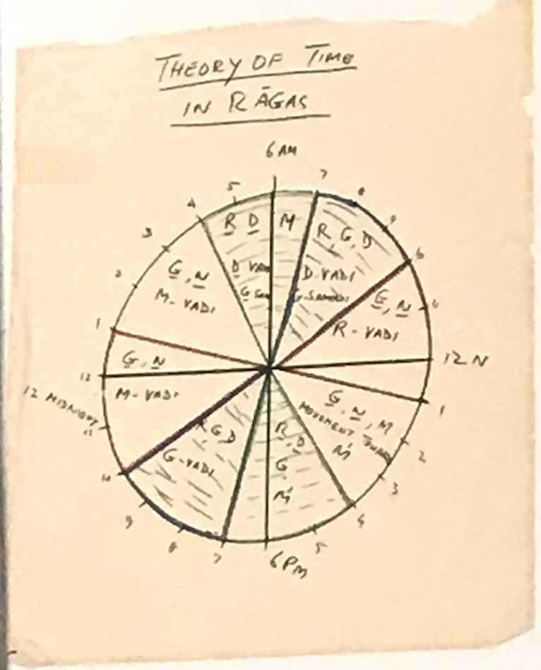

Within Ragas
Each Raga, on top of having the aroha, avroha, and so many more classifications, also have the vadi and smavadi - key swaras of a raga. Based on the swara, hindustani classical music notes that there are times of day.
You’ll clickly notice as is in music, that everything in hindustani music is also a cyclical, often a wheel. As each swara then has its own time of day, the best time to emphasize and truly devote a whole raga/ composition around it, it also defines time of day for the raga as well. This chart is a simple version of the how once can determine whne to play a raga for a composition based on the 24 hours clock we follow.